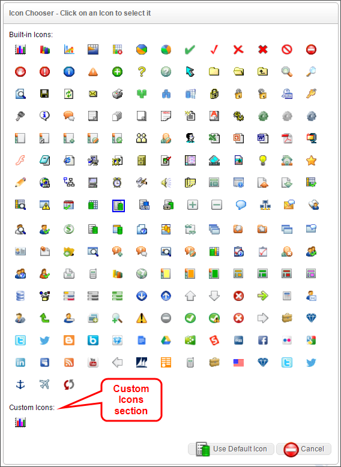

Process Director comes with a number of standard icons you can use To customize the icons displayed for buttons, Content List objects, Timeline Activity results, etc. In addition, you can create your own custom icons, as desired, to further customize the product's interface. Custom icons must meet the following criteria to display properly in Process Director:
Once the criteria above have been met, and the GIF images have been loaded into the custom images folder, you must go to the Properties page of the Installation Settings section, and set the Number of Custom Icons setting to equal the number of icons you have created. Every time you add or delete an icon, this setting must be reset to the new number of existing icons. If you do not, then a new icon added to the system will not be displayed at all, and a deleted icon will display as a broken image.
Once you have uploaded and properly configured the custom icon settings, your custom icons will be displayed in the Icon Picker, in a Custom Icons section, as shown below.
